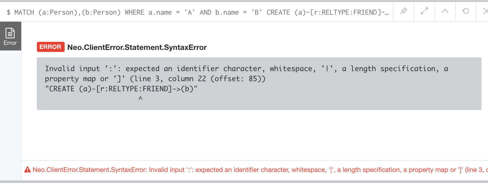

Neo4j 中创建节点时，可以指定多个标签：
1 | CREATE (n:Person:China) |
但是在创建关系时，只能指定一种类型，其实官方通过这两个不同词汇（标签 和 类型）也能体现出节点和关系关于分类方面的不同。
如下图所示，在尝试用多种类型创建关系时，会报错：

一个节点可以有多个标签，一个关系只能有一种分类。
在 GitHub issues 中也有一个简短的解释：
This is unfortunately out of scope right now the property-graph model fared well with a single relationship-type so far.
I’d suggest you create multiple relationships between your two nodes that is the way to go.
属性图模型在单一关系类型时表现更好，如果在两个节点间表示多个关系，直接创建多条关系就可以了。